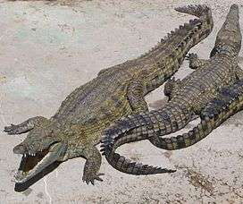
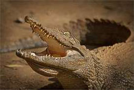

Crocodylus Niloticus


Crocodylus Niloticus ou Crocodile du Nil est une espèce de crocodiliens présent à Madagascar, en général il se trouve dans la plupart des rivières, lacs et marécages des côtes Ouest de Madagascar. Le Crocodylus Niloticus est considéré comme un des crocodiles les plus grands du monde car en effet, l’animal mesure environ dans les 5m de long. Il est un très bon nageur, considéré être le plus redoutable prédateur de Madagascar ; Comme régime alimentaire il mange des oiseaux d’eaux, des poissons, des bœufs et même des chiens…